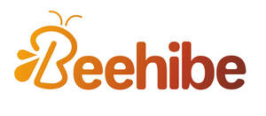

Trade Mark Journal No.2025/020 16 May 2025
UK00004193287 23 April 2025 (9,11,21,28,35)

- Class 9
- Computer software for use on handheld mobile digital electronic devices and other consumer electronics; Computer hardware modules for use in electronic devices using the Internet of Things [IoT]; Electrical and electronic components; Electric and electronic components; Transistors [electronic]; Circuits [electric or electronic]; Electronic components for computers; Electronic doorlocks; Software related to handheld digital electronic devices; Electric wires for communication equipment; USB chargers for electronic cigarettes; Electronic cables; Electronic control circuits for electric heaters; Control modules (Electric or electronic -); Firmware and software for electronic cigarettes; Electrical communications instruments; Electronic circuits; Electronic chips for the manufacturer of integrated circuits; Connectors for electronic circuits; Electronic game software for handheld electronic devices; Electronic communication equipment and instruments; Electronic components; Electronic sensors; Electrical wires; Electronic kitchen timers.
- Class 11
- Dehumidifiers; Air dehumidifiers; Electric dehumidifiers; De-humidifiers; Dehumidifiers for household use; Dehumidifiers for household purposes; Humidifiers; Dehumidifiers for commercial use; Air humidifiers; Electric dehumidifier for household use; Air driers [dryers]; Humidifiers for household use; Dryers (Air -); Air dryers; Humidifiers [for household purposes]; Kitchen sinks; Appliances for cooking.
- Class 21
- Kitchen utensils; Household or kitchen utensils; Kitchen graters; Kitchen jars; Kitchen containers; Spatulas [kitchen utensils]; Kitchen mitts; Kitchen sponges; Kitchen sieves; Tenderizers [kitchen utensils]; Kitchen utensils of silicon; Turners (kitchen utensil); Moulds [kitchen utensils]; Molds [kitchen utensils]; Kitchen moulds; Household or kitchen containers; Bread-cases [for kitchen use]; Mixing spoons [kitchen utensils]; Spatulas for kitchen use; Graters for kitchen use; Presses (Garlic -) [kitchen utensils]; Garlic presses [kitchen utensils]; Ceramics for kitchen use; Egg separators [kitchen utensils]; Serving scoops [household or kitchen utensil]; Pestles for kitchen use; Kitchen mixers, non-electric; Kitchen paper racks; Defrosting trays for kitchen use; Turners for kitchen use; Containers for household or kitchen use; Kitchen paper dispensers; Kitchen grinders, non-electric; Aluminium moulds [kitchen utensils]; Toilet and bathroom cleaning utensils ; Scrapers (kitchen implements); Kitchen boards for chopping; Crushers for kitchen use, non-electric; Mortars for kitchen use; Cooking utensils; Basting spoons, for kitchen use; Spoons (Basting -), for kitchen use; Batter dispensers for kitchen use; Funnels for kitchen use; Cooking pots for use in microwave ovens; Griddles [cooking utensils]; Cutting boards for the kitchen; Kitchen cutting boards; Chopping boards for kitchen use.
- Class 28
- Electronic toys; Smart electronic toy vehicles; Toys; Toys, games, and playthings; Toys and playthings for pets; Ride-on toys; Cuddly toys; Puzzles [toys]; Toys for sandpits; Stuffed toys; Plush toys; Inflatable toys; Toys for babies; Noisemakers [toys]; Toys for pets; Wind-up toys; Fidget toys; Toys for use in perambulators; Radio-controlled toys; Plastic toys; Scooters [toys]; Crib toys; Toys for animals; Mobiles [toys]; Toys, games and playthings for pet animals; Pet toys; Windup toys; Rattles [toys]; Toys for cats; Toys for infants; Model cars [toys or playthings]; Wooden toys; Toys and playthings for pet animals; Toys for dogs; Toy dolls; Educational toys; Outdoor toys; Bendable toys; Toy playsets; Models being toys; Bath toys; Infant toys; Dog toys; Sandbox toys; Action figures [toys or playthings]; Bathtub toys; Sand toys; Inflatable ride-on toys; Whistles [toys]; Soft toys; Miniature car models [toys or playthings]; Controllers for toys; Bouncing toys; Drones [toys]; Cloth toys; Tricycles for infants [toys]; Musical toys; Toy figurines; Toy furniture; Mechanical toys; Toys for birds; Play mats for use with toy vehicles [playthings]; Wheeled toys; Clockwork toys; Developmental toys; Crib mobiles [toys]; Fluffy toys; Plastic toys for use in the bath; Stuffed animals [toys]; Inflatable bath toys; Stacking toys; Rocking toys; Fabric toys; Water toys; Modular toys; Plastic models being toys; Whack-a-mole toys for pets; Model toys; Play mats incorporating infant toys [playthings]; Drawing toys; Toy prams; Action toys; Stuffed and plush toys; Stuffed plush toys; Plush stuffed toys; Battery-operated action toys; Sketching toys; Children's toys; Squeezable squeaking toys; Toy bicycles; Smart toys; Construction toys; Whistling toys; Plastic character toys; Toy tableware; Clockwork toys [of plastics]; Articles of clothing for toys; Toy wheelbarrows; Push toys; Squeeze toys; Talking toys; Toy bakeware and toy cookware; Bendy balls being toys; Toy xylophones; Toy mobiles; Stuffed bean-filled toys; Chewing toys for parrots; Toy animals; Pull toys; Clothing for toy figures; Toy cars; Toy strollers; Toys for pet animals; Water-squirting toys; Assembly toys; Toy balloons; Toy scooters; Intelligent toys; Toy hats; Punching toys; Toy cookware; Toy harmonicas; Music box toys; Toy automobiles; Toy robots; Smart plush toys; Toy tools; Toy weapons; Toys in the form of puzzles; Xylophones being musical toys; Novelty toys for parties; Toy glockenspiels; Soft sculpture toys; Inflatable pool toys; Costumes being childrens playthings; Toy balls; Toy pushchairs; Toy airplanes; Toy bakeware; Puzzle mats [toys]; Money guns being toys; Playthings; Toy vehicles.
- Class 35
- Retail services in relation to kitchen appliances; Rental [Office machines and equipment -]; Retail services in relation to toys.
Beehibe Ltd